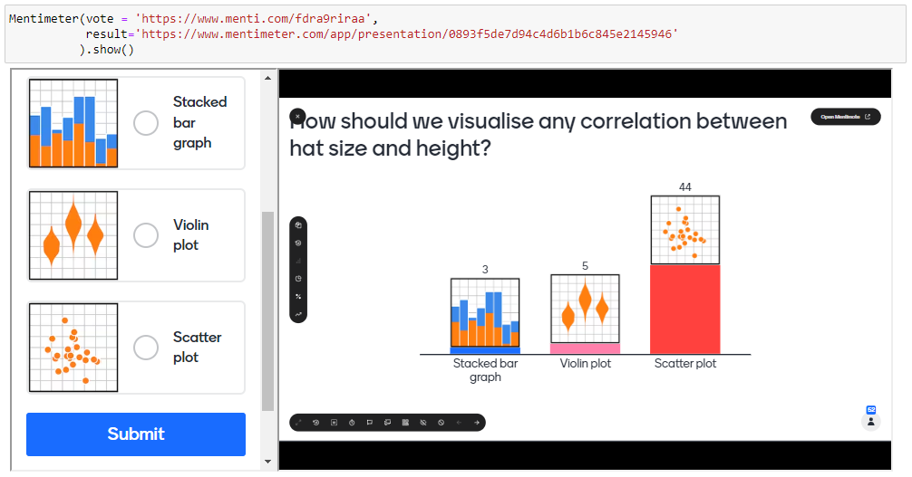
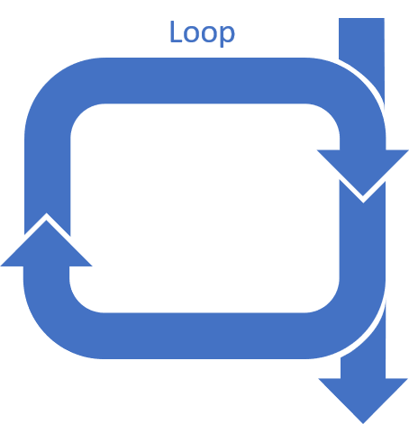
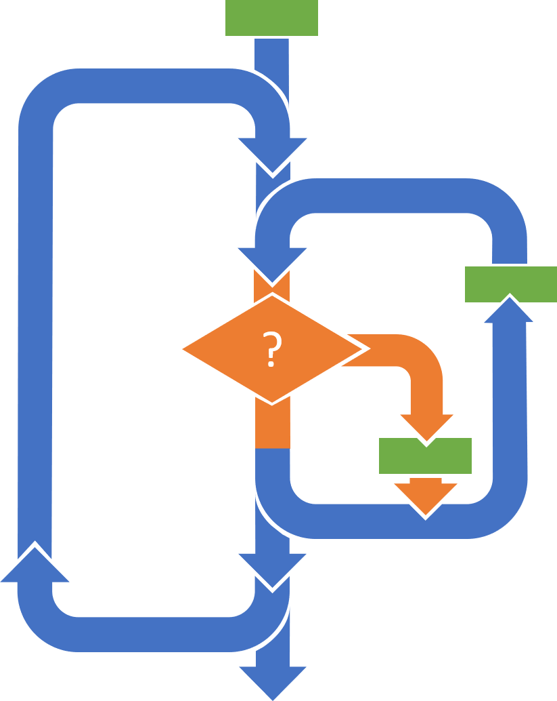

Unit 01: Problem Solving II
Contents
Unit 01: Problem Solving II#

Author: Dr James Cumby
Email: james.cumby@ed.ac.uk
Learning objectives:#
By the end of this unit, you should be able to:
interact with a Jupyter notebook
break a complex problem into smaller steps;
consider how those steps might be implemented as code (developed more later in the course);
use pseudocode to develop simple algorithms
Some of the content is adapted from Software carpentry lessons.
Table of Contents#
Jupyter Cheat Sheet
To run the currently highlighted cell and move focus to the next cell, hold ⇧ Shift and press ⏎ Enter;
To run the currently highlighted cell and keep focus in the same cell, hold ⇧ Ctrl and press ⏎ Enter;
To get help for a specific function, place the cursor within the function’s brackets, hold ⇧ Shift, and press ⇥ Tab;
Link to Jupyter documentation:#
You can find useful information about using Jupyter at docs.jupyter.org.
1. Problem solving and algorithms #
There are a number of steps involved in solving a problem:
Understand what the problem is and what it is asking for
Do you have enough information to solve it immediately?
Understand what the correct solution needs to be capable of (or equally not capable of)
Work out a series of steps to get from start to finish
‘Solve the problem’!
Check that the solution works as expected
This unit will look at steps 1-3 and give you practice in breaking down complex problems.
Import libraries #
We need a few additional Python features (‘Libraries’, see Unit 03) in this session - make sure to run the following cell!
import sys
import os.path
sys.path.append(os.path.abspath('../'))
from helper_functions.mentimeter import Mentimeter
from helper_functions.formatting import format_pseudocode
from IPython.display import IFrame
1.1 Understanding the problem and its solution #
Some problems have very clear goals, and once you have got used to them are relatively straighforward to solve, i.e.
Find the value of x for which
\[x - y = 6\]and $\(2x + y = 18.\)$
Even if a large number of steps are involved, the process is well-defined.
In contrast, some questions are much less defined, and these are quite challenging to overcome. Sometimes this is due to an uncertain objective, while sometimes there is a shortage of information.
How would you synthesise 2,3-Dimethyl-2-cyclopenten-1-one from readily-available starting materials?

(You’ll see this in year 3)
2. Step 1: Aim(s)#
The first step of any problem is understanding what you are required to do, and working out whether you have all of the information required to solve it. Consider the following question and then vote in the poll below.
Cheese is acidic, due to the presence of lactic acid. When cheese melts it can separate into milk solids and fat; this can be avoided by keeping the pH of the cheese mixture around 5.2. How much citric acid and/or sodium citrate must be added to cheese to prevent it from separating during melting?
Mentimeters#
This is an example of the type of questions students get asked to answer via Mentimeter:
Please see mentimeter_example.ipynb for an example on how to embed Mentimeters into markdown cells. 
3. Step 2: Information #
Once you have determined the objective of a problem, you then need to work out if you have the information and knowledge required to solve it. For instance, the following question has a clear goal, but what additional information is required?
If human hair is composed mainly of the protein α-keratin, estimate the rate of incorporation of amino acid units per follicle per second.
Tasks 1#
In pairs or groups of three, discuss the objective for the following questions, and any information you may require.
Click here to see the solution to Task 1.1
Need to know the electron : proton mass ratio, and also planet mass ratios
Answer: Saturn (approximately)
Click here to see the solution to Task 1.2
We need a list of electrode potentials, and to combine the most positive and negative values involving one species (to have a binary reaction overall). Other sources exist, but from wikipedia the most negative half reaction is
while the most positive (anionic) half reaction is $\( \ce{F2(g) + 2e^- -> 2F^-}\qquad E_{\mathrm{vs\ SHE}} = +2.87\ \mathrm{V} \)\( Overall: \)\( \ce{Sr + F2 -> SrF2}\qquad E_{\mathrm{vs\ SHE}} = +6.971\ \mathrm{V} \)$
Click here to see the solution to Task 1.3
Tourmaline (a borosilicate mineral) and herapathite (iodoquinine sulfate) are both optically active; the latter is used in optical polarizers. Depending on the relative orientation of the crystals, the colour and/or transparency is likely to change.
4. Step 3: Constructing an algorithm#
Once you have determined the problem and have all the information required, you then need to construct an algorithm (sequence of steps) to get to the answer.
Aside - program construction#
In general, computer programs consist of very few essential ‘building blocks’ (you will learn about these throughout the course):
Operations |
Loops |
Decisions |
|---|---|---|
These are things like adding/multiplying numbers, reading or writing files, displaying a graph, etc. |
These allow you to repeat things more than once, for instance iterating over files |
Decisions (of IF statements) divert the flow of a program by doing some sort of test |
|
 |
|


{kind=link}
These can be combined together to create quite complex algorithms: 
{kind=link}
Hint: If you find this sort of graphical programming helpful to understand algorithm logic, check out Blockly!
5. Pseudocode #
Loops and decision statements are normally shown as indented:
for each item in a sequence:
do something
Indents can be nested:
if x is 5:
if y is 10:
do something
This indentation is essential in Python (see Unit 03)!
The previous examples were a form of ‘pseudocode’; a way of writing down an algorithm without worrying about the specific commands required to run correctly. Pseudocode is often more readable than ‘real’ computer code, and can in theory be translated into any programming language.
Pseudocode summarises the steps of an algorithm without using a specific syntax.
For instance, the following ‘pseudocode’ describes an algorithm to print any files containing the text ‘Benzene’
for each file in a list of files:
open file and read contents
if 'Benzene' is in file contents:
print file name
close file
The same algorithm written for Python might look like:
for file in list_of_file_names:
file_handle = open(file, 'r')
contents = f.readlines()
if 'Benzene' in contents:
print(file)
file_handle.close()
6. Choosing an algorithm #
Often, there are multiple valid solutions to a problem. You should try to appreciate other approaches, but find one that you understand.
As a simple example, in your head work out the answer to
How did you do it?
\(50 + 10 = 60\), then \(60 + 4 + 7 = 71\)
\(54 + 10 = 64\), then \(64 + 7 = 71\)
\(50 + 17 = 67\), then \(67 + 4 = 71\)
Something else…?
If you were given 1000 random Infrared spectra from small molecules, how could you determine which ones were alcohols?
Click here to see solution to the Worked example.
FOR each spectrum:
Find absorption for $2600 < \nu < 3500$
fit background
IF absorption - background > threshold:
assign as alcohol
Some potential problems to consider when developing an algorithm#
The OH-stretching region near 3000 cm-1 is not unique

Data obtained from Coblentz Society, Inc., “Evaluated Infrared Reference Spectra” in NIST Chemistry WebBook, NIST Standard Reference Database Number 69, Eds. P.J. Linstrom and W.G. Mallard, National Institute of Standards and Technology, Gaithersburg MD, 20899, https://doi.org/10.18434/T4D303, (retrieved December 14, 2022).
One solution could be to examine the peak width - alcohol OH peaks are typically broad
The background signal is not guaranteed to be ~100% T

Tasks 2 #
In your groups, discuss and solve the following problems. Try to use a “Pair Programming” approach.
Some reactions can be monitored in-situ by NMR spectroscopy, by following the growth of a new NMR peak with time. For such a reaction, what order would you need to perform the following steps in order to plot a concentration vs time profile?
Drag the boxes into the correct order, remembering to indent things that should be performed inside the loop
IFrame(' https://parsons.herokuapp.com/puzzle/17312c8d7d1d44348ed1bff8886c54da', 950, 600)
Click here to see solution to Task 1.4
FOR each NMR spectrum:
read in NMR data file(s)
extract time from NMR file
fit NMR peak of interest
extract peak area
convert area to concentration
plot concentration vs time
If you were given a sequence of atomic coordinates during a reaction that were for some reason in the wrong order, how might you try to put them back in the correct sequence? For example, consider the sequence of five steps from an SN2 reaction shown below (imagining you had the atomic coordinates):

Hint: If you know how far each atom must move to get to a different step, the next step along the SN2 reaction will be the one with the smallest (total) distance
IFrame(' https://parsons.herokuapp.com/puzzle/7b69c59b740c4d8e82dcbd2875dd5ffe', 950,500)
Click here to see solution to Task 1.5
FOR each pair of structures:
Determine (summed) distance between equivalent pairs of atoms (e.g. O-O, Br-Br etc).
Assign largest distance as that between start/end points
Use starting point as `current` step
LOOP continuously:
Find minimum distance from current step
IF not already part of sequence:
Assign to sequence.
IF next in sequence is the end point:
STOP - problem complete.
Change `current` step to next in sequence
Recap #
This session has covered:
How to break down a problem
Know what you are trying to answer
Determine if you have all the information you need before starting
Constructing an algorithm
Multiple ways of solving the problem
as long as it works, how isn’t important
Try to think of pitfalls of your solution
One solution may often be faster, more robust, easier to read, etc…
Feedback #
Please say what you did and didn’t like about this session!
Students are asked to give feedback at the end of each session. Separate Mentimeter quizzes ask for positive and negative feedback in order help improve the course unit.